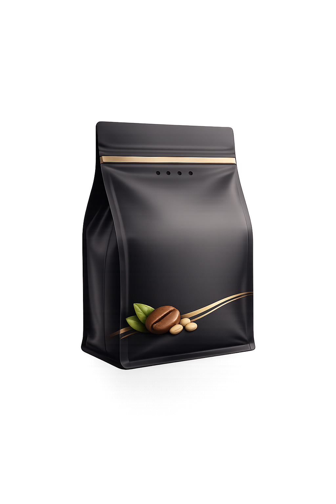
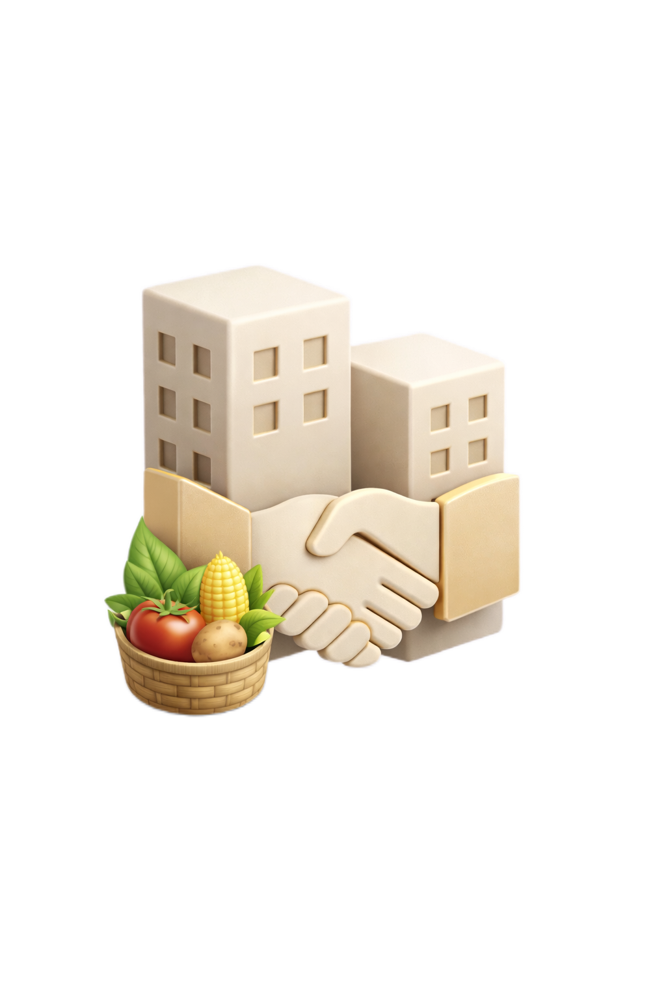
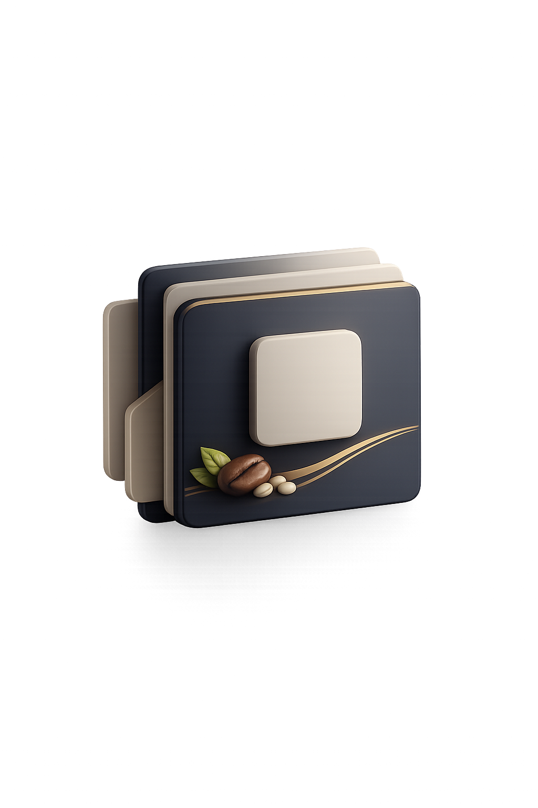
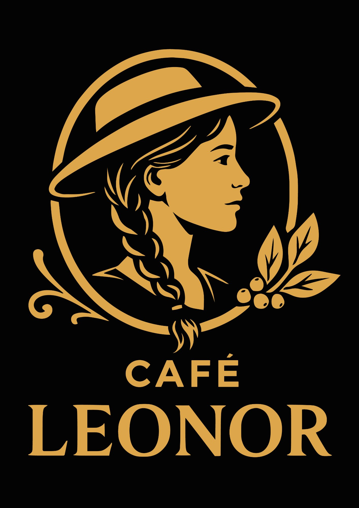

Colombia · Café de especialidad · Origen con propósito
TASARA nace del encuentro entre personas, territorios y una forma más consciente de disfrutar el café colombiano. Trabajamos con origen en Risaralda y Caldas para llevar calidad, cercanía y propósito a consumidores, aliados y empresas.
TASARA SAS fue creada por Ángela María Arango Jaramillo y Camilo Ernesto Tascón Devia. Su historia nace de una amistad, del vínculo entre Cali y la región cafetera, y de años de trabajo cercano con familias productoras que han hecho del café una forma de vida.
La marca recoge esa cercanía entre regiones y la convierte en una propuesta con identidad propia. Desde Risaralda y Caldas, TASARA construye una relación real con el origen y la transforma en productos que conectan tradición, diseño y visión de futuro. Así nace Café Leonor.
TASARA trabaja para tender puentes entre el esfuerzo del campo colombiano y quienes buscan un café mejor. Lo hacemos con una visión de largo plazo, respeto por las comunidades cafeteras y una apuesta clara por la calidad en cada detalle.
Desde Café Leonor hasta soluciones para negocio, TASARA reúne productos pensados para consumo diario, regalos, alianzas comerciales y desarrollo de marca alrededor del café colombiano.

Café arábiga de especialidad pensado para acompañar la casa, la oficina, los regalos y esos momentos cotidianos que merecen una mejor taza.
Ver detalle
Una oferta para compradores y aliados que necesitan trazabilidad, información clara de finca y selección de café colombiano según su búsqueda.
Consultar origen
Desarrollamos propuestas para empresas que quieren ofrecer café con una presentación cuidada, identidad propia y acompañamiento comercial.
Hablar de B2BCafé Leonor es la expresión más cercana de TASARA: un café de especialidad que reúne origen, cuidado en la presentación y una forma más humana de compartir lo que somos.
Es una marca pensada para acompañar momentos cotidianos con calidad, confianza y una identidad visual que honra el trabajo de las comunidades cafeteras.

Formatos disponibles
El café que trabaja TASARA proviene de fincas ubicadas en Risaralda y Caldas. Allí empieza la historia de cada lote, con fechas, nombres, paisajes y procesos que vale la pena conocer más de cerca.
Consultar lotesRegistro de lotes por período, finca y momentos clave para seguir más de cerca el recorrido del café.
Galerías de finca y enlaces a videos cortos para que el origen también se sienta cercano, visual y fácil de explorar.
Una mirada más humana al territorio, a las personas y a los procesos que hacen posible cada taza.
En TASARA creemos que un buen café también debe generar valor alrededor suyo. Por eso trabajamos de la mano con comunidades cafeteras, en especial con mujeres cabeza de familia, promoviendo oportunidades de desarrollo económico y social.
Queremos que cada producto refleje calidad, origen, confianza y una relación responsable con quienes hacen posible el café.
Hablemos de alianzasProcesos rigurosos y consistencia para ofrecer un café confiable, bien presentado y agradable de repetir.
Relación cercana con comunidades productoras y reconocimiento del trabajo campesino colombiano.
Productos actuales, empaques cuidados y soluciones adaptadas a distintos momentos y canales de mercado.
Para pedidos de Café Leonor, consultas sobre presentaciones o atención directa para consumidor final.
WhatsApp · Compra contacto@tasara.colombia.comPara café verde, desarrollo de marca, soluciones para empresas, hoteles, restaurantes, distribuidores y oportunidades de exportación.
Solicitar cotizaciónAtención comercial para desarrollo de negocio y expansión.